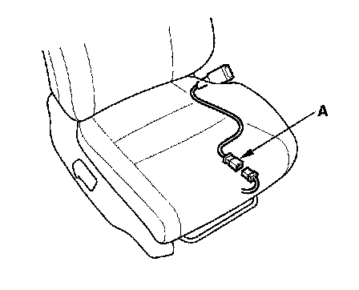
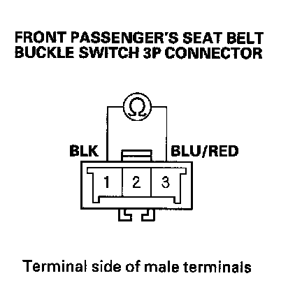
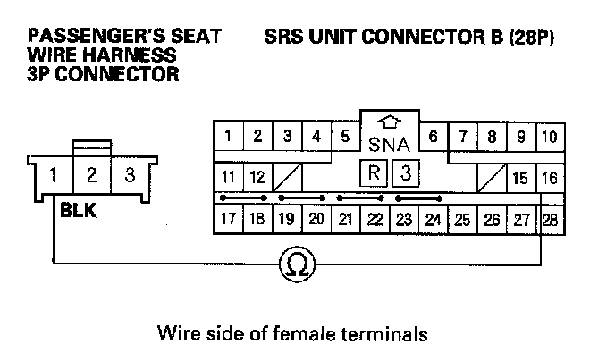
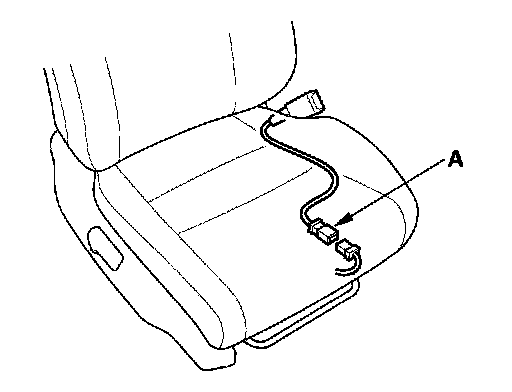
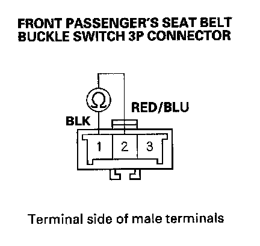
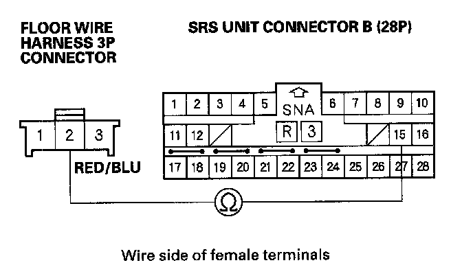
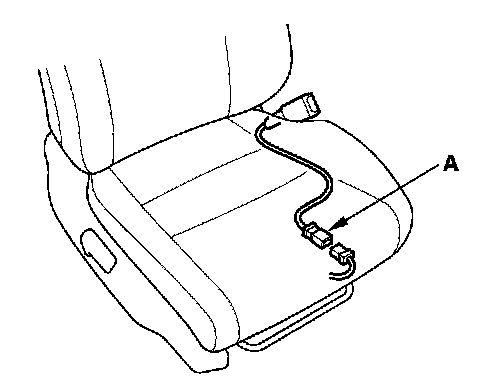
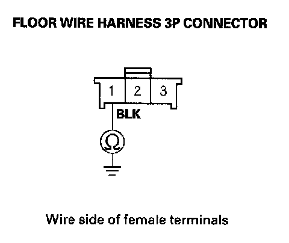

DTC 62-1x
DTC 62-1x ("x" can be 0 thru 9 or A thru F): Open in Front Passenger's Seat Belt Buckle Switch1. Erase the DTC memory.
2. Connect the HDS to the DLC.
3. Turn the ignition switch ON (II), then buckle and unbuckle the front passenger's seat belt several times.
4. Make sure the HDS communicates with the vehicle and the SRS unit. If it does not communicate, troubleshoot the DLC circuit.
5. From the Main Menu on the HDS, select SRS, then PARAMETER INFORMATION. In the PARAMETER INFORMATION Menu, select "FRONT RIGHT BUCKLE."
Is "OPEN" indicated?
YES
- If OPEN is indicated only when the front passenger's seat belt is buckled, go to step 6.
- If OPEN is indicated only when the front passenger's seat belt is unbuckled, go to step 13.
- If OPEN is indicated only when the front passenger's seat belt is buckled and unbuckled, go to step 21.
NO - Intermittent failure, system is OK at this time. Go to Troubleshooting Intermittent Failures. If another DTC is indicated, go to the DTC Troubleshooting Index.
6. Turn the ignition switch OFF.

7. Disconnect the floor wire harness 3P connector from the front passenger's seat belt buckle switch 3P connector (A).

8. Buckle the front passenger's seat belt. Check resistance between the No. 1 and No. 3 terminals of the front passenger's seat belt buckle switch 3P connector. There should be 0 - 1 ohm.
Is the resistances specified?
YES - Go to step 9.
NO - Replace the front passenger's seat belt buckle assembly then clear the DTC.
9. Disconnect the negative cable from the battery, and wait for 3 minutes.
10. Disconnect both seat belt tensioner connectors and both seat belt buckle tensioner connectors.
11. Disconnect SRS unit connector B (28P) from the SRS unit.

12. Check resistance between the No. 16 terminal of SRS unit connector B (28P) and the No. 1 terminal of the passenger's seat wire harness 3P connector. There should be 0 - 1 ohm.
Is the resistance as specified?
YES - Faulty SRS unit or poor connection at SRS unit connector B (28P) and the SRS unit. Check the connection between the connector and the SRS unit. If the connection is OK, replace the SRS unit.
NO - Open in the floor wire harness; replace the floor wire harness.
13. Turn the ignition switch OFF.

14. Disconnect the floor wire harness 3P connector from the front passenger's seat belt buckle switch 3P connector (A).
15. Unbuckle the front passenger's seat belt.

16. Check resistance between the No. 1 and No. 2 terminals of the front passenger's seat belt buckle switch 3P connector. There should be 0 - 1 ohm.
Is the resistance as specified?
YES - Go to step 17.
NO - Replace the front passenger's seat belt buckle assembly then clear the DTC.
17. Disconnect the negative cable from the battery, and wait for 3 minutes.
18. Disconnect both seat belt tensioner4P connectors and both seat belt buckle tensioner 4P connectors.
19. Disconnect SRS unit connector B (28P) from the SRS unit.

20. Check resistance between the No. 15 terminal of SRS unit connector B (28P) and the No. 2 terminal of the floor wire harness 3P connector. There should be 0 - 1 ohm.
Is the resistance as specified?
YES - Faulty SRS unit or poor connection at SRS unit connector B (28P) and the SRS unit. Check the connection between the connector and the SRS unit. If the connection is OK, replace the SRS unit.
NO - Open in the floor wire harness; replace the floor wire harness.
21. Turn the ignition switch OFF.

22. Disconnect the floor wire harness 3P connector from the front passenger's seat belt buckle switch 3P connector (A).
23. Unbuckle the front passenger's seat belt.

24. Check resistance between the No. 1 terminal of the floor wire harness 3P connector and body ground. There should be 0 - 1 ohm.
Is the resistance as specified?
YES - Replace the front passenger's seat belt buckle assembly then clear the DTC.
NO - Open in the floor wire harness or poor ground connection at G602:
- 2-door
- 4-door
If G602 is OK, replace the floor wire harness.